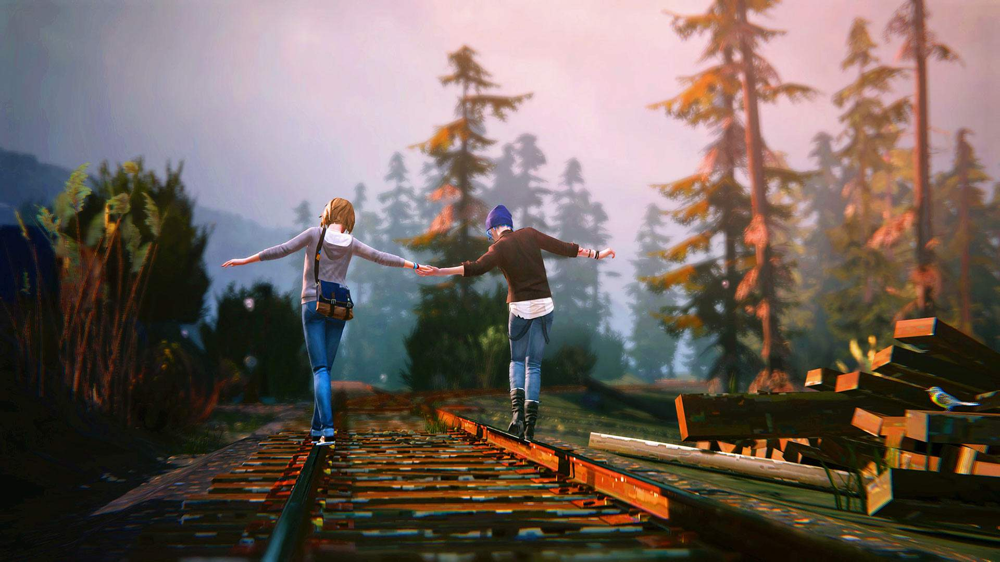
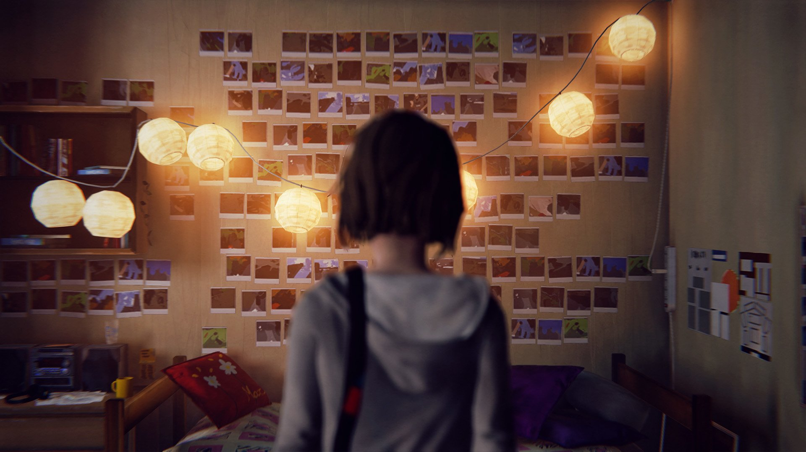
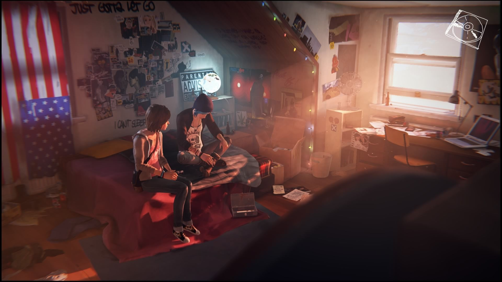
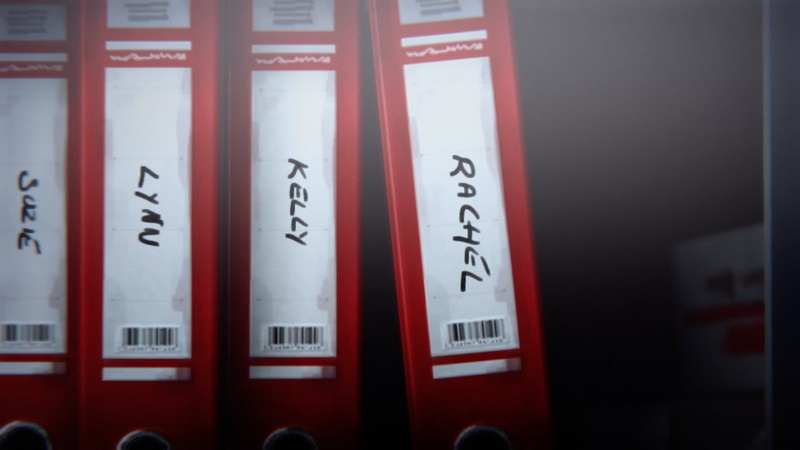
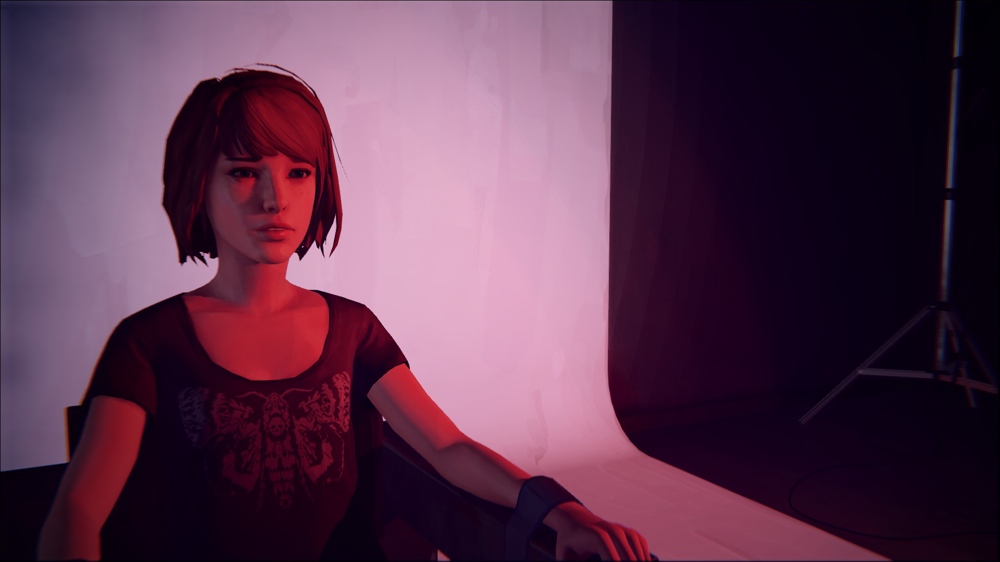

Life Is Strange é um jogo eletrônico de aventura gráfica onde as ações do jogador ajustam a narrativa enquanto ela se desenrola. A história é contada na perspectiva de Maxine Caulfield, uma estudante de fotografia que descobre possuir a habilidade de voltar no tempo, fazendo com que cada escolha sua crie um efeito borboleta. Ao prever a chegada de uma grande tempestade, Max assume a responsabilidade de impedir que sua cidade seja destruída.